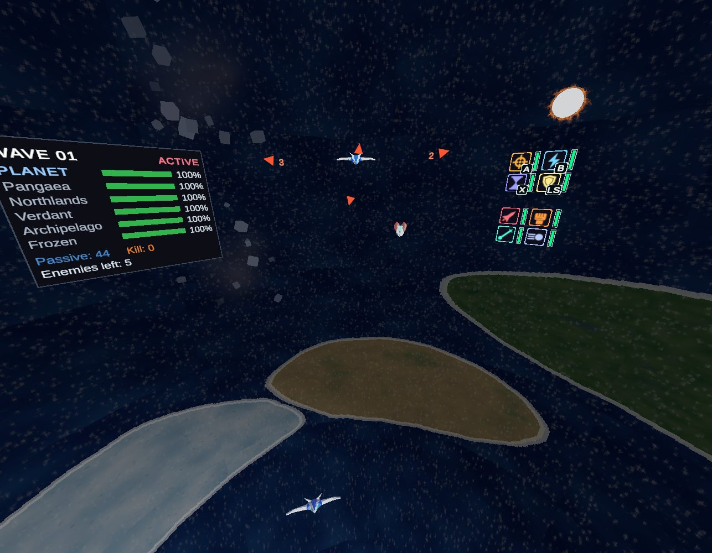
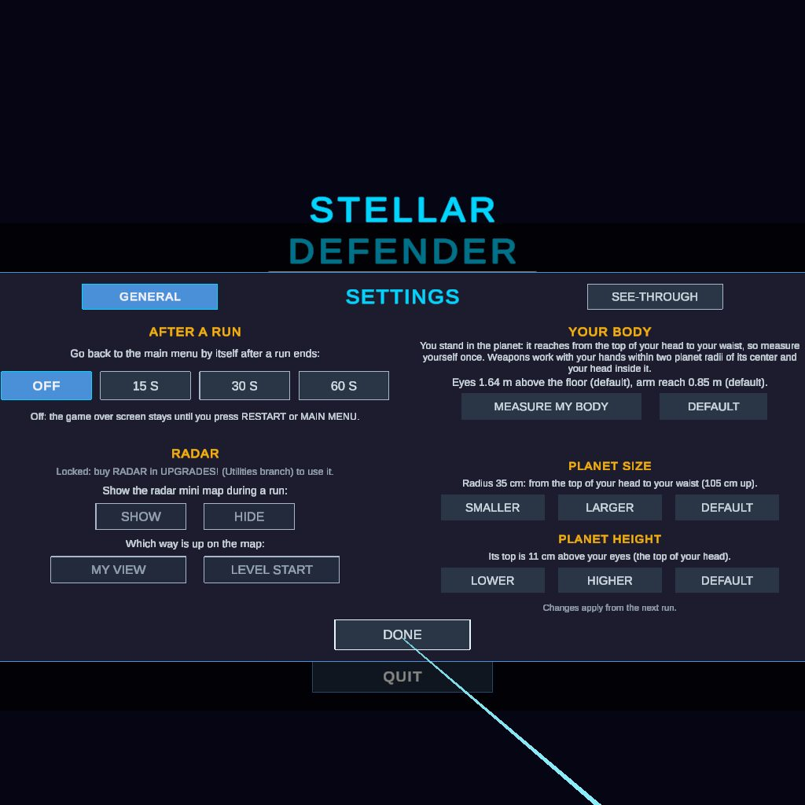
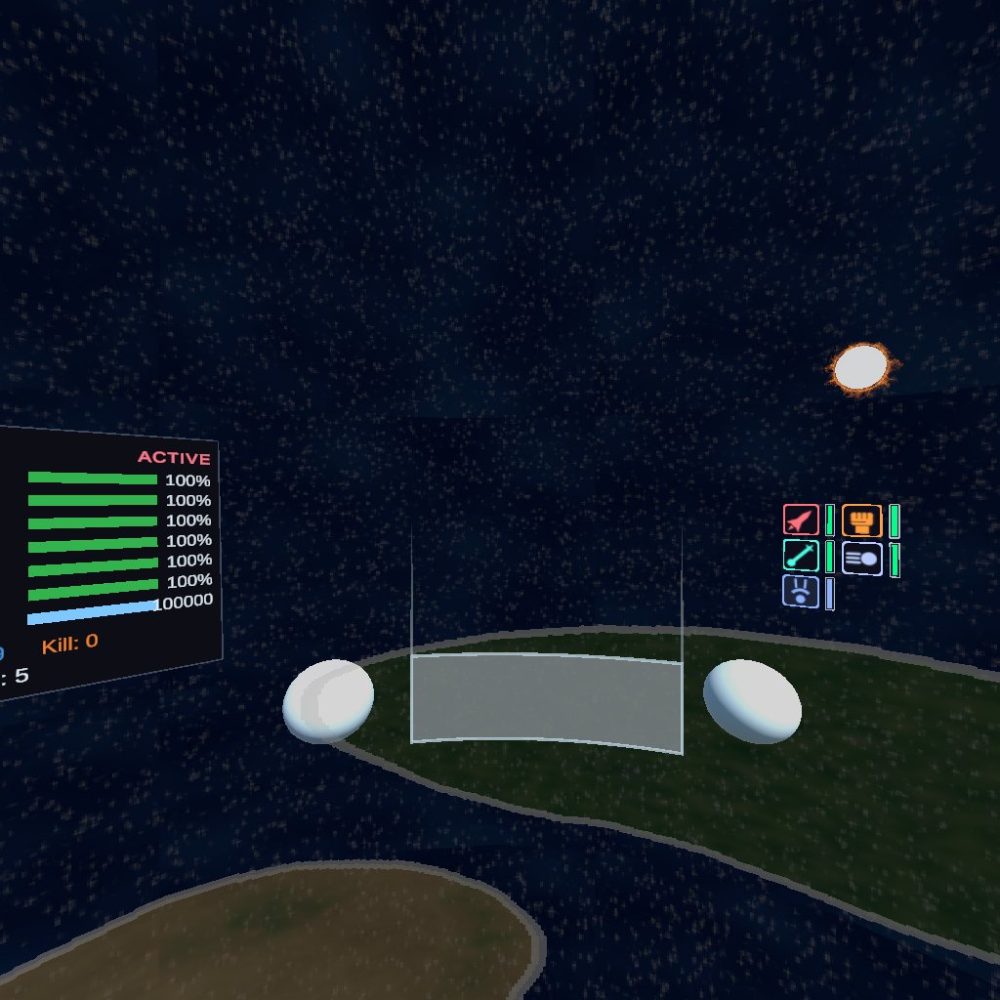
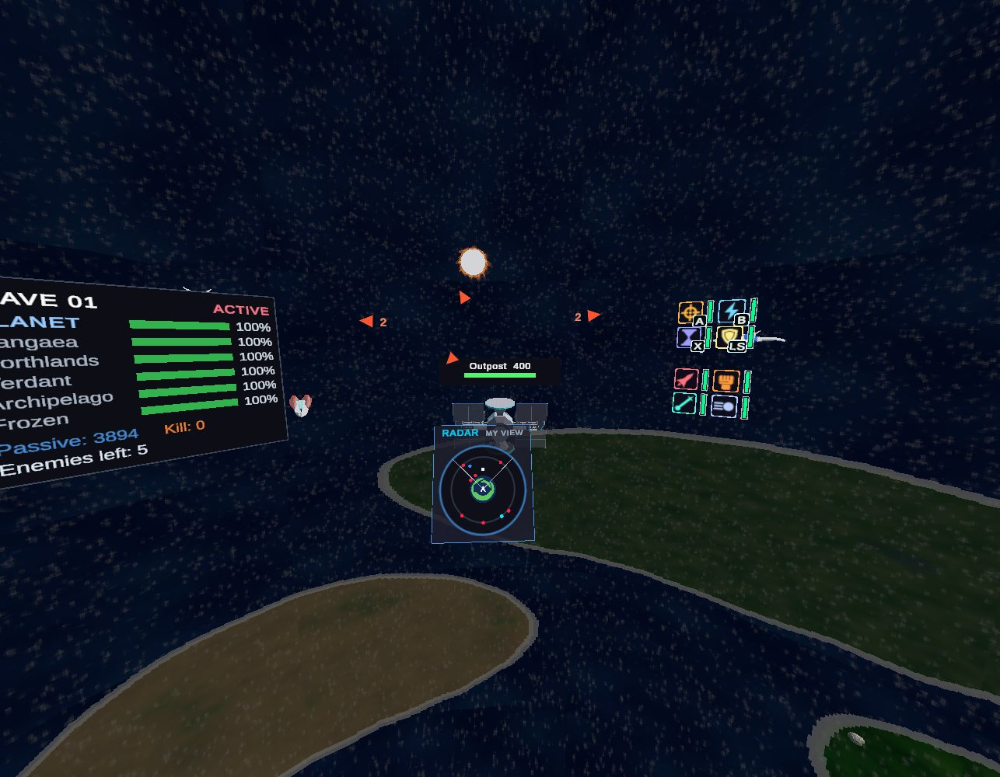
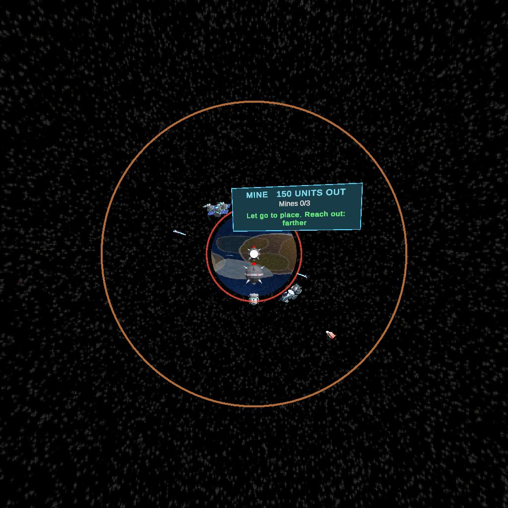
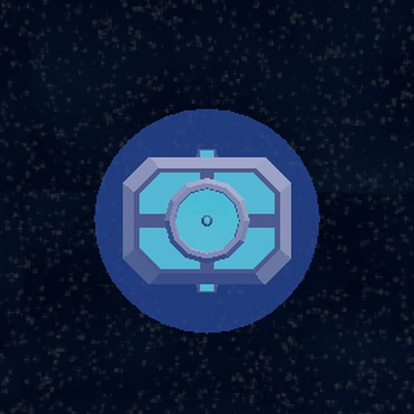

Hold the planet for ten waves
Stellar Defender is a VR exercise game for Meta Quest. Enemy ships attack in waves. You stand inside the planet you defend, punch the ships that come close and shoot the rest with hand-motion weapons, buy defenses between waves, and spend what you earned on permanent Perks after the run. The planet is 75 game units in radius and turns slowly (1.5 degrees per second; SETTINGS, PLAY can switch the spin off or double it). How you play covers where you stand and your weapons.
Jump to: the ten waves · the Planet Upgrade Shop · Mods · difficulty and heat · challenges. Ship types such as the Suicider and the Blocker are described on Enemies.
The loop
Steps 2 to 4 repeat each wave. The run ends after wave 10 (a win) or when the planet's health reaches zero.
Resources
Upgrade Credits pay for the Planet Upgrade Shop during a run; kills earn Kill points, which become Perk Points for the tree when the run ends. Rewards lists every source and how the end-of-run payout is worked out.
Planet 1's ten waves
This page covers planet 1, the planet a run plays unless GAME MODE picks another. It is a fixed introduction: all ten waves are written by hand, so every run of a difficulty sends the same ships in the same places. Counts are for Normal. Suiciders come on a steady beat (the "Suicider beat" column: one every so many seconds on Easy, Normal and Hard), so their number follows the difficulty's tempo; the other ships scale with the difficulty (Easy 0.8x, Hard 1.25x, see Difficulty below). Planet 1 has its own health for each ship type (Enemies). A wave's own health and damage factors stack with the difficulty's. Suiciders come about 1.3 times as often as they once did, so waves are shorter: the Length column is each wave's time limit on Normal (a limit ends sooner on the other levels' beats only by the same rule, so treat it as the Normal figure). A Blocker never arrives alone: waves 4, 5, 6, 8 and 9 send a Shooter or Advanced Shooter with each one to use its shield as cover (Enemies). The clear bonus is Upgrade Credits paid when the wave is cleared (Rewards).
When a wave ends
- Cleared: once all of a wave's ships have come and none of them is left, counting the ships its Spawners and any Iron Leviathan released. The wave ends about 1 s after its last ship is destroyed, so the death effect can clear.
- Boss wave: destroying the Iron Leviathan stops any further ships from arriving; the wave ends once the ships still out are gone.
- Time out: otherwise the wave ends when its time runs out. Ships still alive stay and fight on into the next wave.
- Clear-up: no new wave ships arrive in the last 10 s of a wave's time, so the end belongs to the ships already out. A Spawner still alive keeps releasing.
- Last wave: the run's final wave goes on until every ship is destroyed, its own and any left from earlier waves, or until one extra minute after its time runs out. Either way the run is won.
- Arrivals: at most 4 of a wave's ships start in any one second; the others wait a quarter second at a time. Ships released by Spawners don't count toward this.
Planet Upgrade Shop between waves (Upgrade Credits)
Tabs: DEFENSE · RESTORE · BOOST · STATIONS (wrist menu).
- DEFENSE is for what stands between ships and the planet: the turrets, the Jammer and the Planetary Shield.
- RESTORE is for mending damage already done: Global Repair for the continents, Defense Repair for turrets and stations, Shield Repair for the Planetary Shield.
- BOOST is for strength you rent: Overcharge, Rapid Cycle, Target Painter and Shield Booster last for the next wave only; Weapon Calibration lasts the run.
- STATIONS is for the Outpost and Bulwark, which you carry out from the wrist menu.
Prices rise by the scaling factor with each purchase in a run. Left Y opens and closes the Planet Upgrade Shop in VR. A new profile's Planet Upgrade Shop starts with six Upgrades: Laser Turret, Ballistic Turret, Planetary Shield, Global Repair, Defense Repair and Overcharge. The other Upgrades wait for Perks in PERKS! (Turrets and Stats branches), and the Planet Upgrade Shop says "More in PERKS!" while any are hidden. No count limits turrets: you can build one wherever a build slot is free, and the Planet Upgrade Shop says "No free slot" only when every slot is taken. Missile and Point Defense turrets still need their Perks. The Extra Turret and Second Turret Perks each open one extra build pad (planet 1 has 10 slots, 11 with one of them and 12 with both), Turret Crews gives +10% fire rate a level to the turret type you pick, and Turret Discount makes placing a turret cost 10, 20, 30, 40 or 50% less.
Mods: choose one of three
Difficulty
Enemy speed does not change with difficulty. Health, damage, ship count and the spawn window (How you play) do.
Heat modifiers
Challenges
Rewards
Every source of Upgrade Credits, Kill points and Perk Points, and how the payout at the end of a run is worked out. The numbers come from the game's settings and are first values to tune.
On this page: Upgrade Credits during a run · Kill points · Perk Points at the end of a run · worked example.
Upgrade Credits during a run
Spent in the Planet Upgrade Shop between waves and on stations. Whatever is left when the run ends is lost.
Kill points
Only ships your side destroys pay: your punches, weapons, mines and abilities, your turrets and stations. Nothing is paid for a Suicider that reaches the planet, rams a station or dives into your Shield, or for a ship the colony ship's guns shoot down over a pole. Only the first few ships a Spawner puts in play pay (as many as it can release in all), and the same limit holds for the Iron Leviathan's hangar, so neither can be farmed. Heat and a wave's own factors don't change a ship's points.
Perk Points at the end of a run
Perk Points = Kill points x win bonus x heat x challenge
How you play
You are a giant standing in the planet. The planet is a see-through ball 70 cm across, centered at your chest: with the default body it runs from the top of your head down to about your waist. Your eyes are inside it, near its top, and you look out through its surface at the ships coming in around you. Turn to face them, punch the close ones, and fire your other weapons with hand motions.
Your hands. Each controller is drawn as a starry glass hand: a faint bluish glass shape with a thin bright rim, a window onto a starfield inside it, and a skeleton of stars, one line of stars for each finger and thumb with a bright star at each fingertip. The fingers follow the controller only: the grip closes the middle, ring and little fingers, the trigger curls the index finger, a thumb on a face button or the stick lowers the thumb, and a full grip with a full trigger is a fist. The hand grows more detailed with the Perks you own in the Punch branch (first the rim and the joints, then thin lines along the fingers, then more stars on the lines, then full brightness and a faint nebula), and each Shrapnel Perk adds a small spark circling it. A hand turns gray while its attacks do nothing, for example when you are out of reach. As a punch speeds up, a violet glow builds on the hand, and when the punch goes off a violet-white burst grows to the size of its blast, so you see what it will hit. A hand is hidden only while its controller is not tracked.
Everything on this page was tested with a simulated headset in the Editor, not on a Quest. Sizes in meters are for the default body.
On this page: where you stand · reach and Untethered · fit the planet to your body · starting weapons · weapons · abilities · where ships come from.
Where you stand

Reach and Untethered
Fit the planet to your body
SETTINGS, on the title screen's bottom strip, opens in the right half with the tabs BODY, PLAY, HUD, GRAPHICS and SEE-THROUGH. On BODY, MEASURE MY BODY: stand straight, hold both arms straight out to the sides and pull both triggers; your eye height and reach are saved to your profile. A second step has you punch straight ahead to measure your punch reach. While you measure, the current step is highlighted on the page and names the controls to use (both triggers, a single trigger, B or Y). PLANET HEIGHT moves the planet up or down (DEFAULT puts its center at your chest), FIST POSITION moves where your hands sit on the controllers (the point a punch hits from), FIST ANGLE (TILT UP, TILT DOWN or DEFAULT, 5 degrees a press) tilts the drawn hand on the controller and changes nothing else. HAND ANGLE and HAND POSITION line the drawn hand up with your real hand (the punch's hit point stays where FIST POSITION puts it): HAND ANGLE has TURN IN, TURN OUT, ROLL IN and ROLL OUT, 5 degrees a press, and HAND POSITION has FORWARD, BACK, UP, DOWN, IN and OUT, 1 cm a press, each with a DEFAULT to undo it. AIM ANGLE (it was called CONTROLLER ANGLE) tilts the aim of the hand weapons by 5 degrees a press, up to 30 degrees each way. FIST POSITION, FIST ANGLE, HAND ANGLE, HAND POSITION and AIM ANGLE each show a live line drawing of the controller as you change them. PLAY holds what happens after a run and the planet's spin. On SEE-THROUGH, a slider each for the planet and the colony ship (5% to 100% solid, 35% by default) with a live view from inside. GRAPHICS holds the background (stars, black or your room), the resolution and switches for effects, the colony ship and the shield glow. ABOUT on the title screen shows the credits.




Your starting weapons
Every profile has the Stellar Punch. A new profile also picks one ranged weapon, right after its name: the Laser Blaster, the Homing Missile or the Mass Driver. That weapon is free and the choice is not offered again; the other two cost 500 Perk Points each in PERKS!, and each also needs depth in the tree. The second ranged weapon opens once you own a Perk on the third row or lower of the starter's branch, and the third once you own one there in the second weapon's branch. Stellar Punch Perks never count. The Mass Driver is the hardest to aim and hits hardest. Every weapon card has a PRACTICE button, and TRAINING, a tile on the title screen, practices all five motions with ghost hands and targets.

Weapons
One settings file holds every weapon's numbers, for VR and the desktop test harness alike. Damage is before upgrades and critical hits. Speeds are in game units per second; hand distances and speeds are real meters. Numbers are first values to tune.
Weapon modes (Railgun, Wide Beam, Seeker Swarm and the rest) are Perks in the Perk tree: own any of them, switch one on in PERKS!. SETTINGS, BODY, AIM ANGLE tilts every hand weapon's aim.
Abilities
The Shield's Perks (SHIELD branch) make it stronger, wider (spread your hands while you drag it, one lane more per 15 cm up to 6 wide; one strength covers the whole width), mending (it regains strength after 3 s without a hit), reactive (it hurts ships in its lane when it breaks) or two at once. The other four are bought in the Perk tree (Utilities); level 2 shortens the cooldown to 75%. Buttons stand in until their hand motions are built.


Where ships come from
- Hand motions modeled on tai chi for the four abilities (buttons stand in).
Structures
The turrets, stations, mine, the colony ship's two halves and the Blocker, as low-poly models from the make-model library. Drag to turn a model, scroll or pinch to zoom. Amber dots mark attach points: where turrets mount on a station, the Bulwark's built-in guns, and the colony ship's gun barrels.
On this page: turret sites · stations · target alarm · mines · the colony ship.




Turrets are built only on the build slots of the planet's turret sites. Planet 1 has one thin ring close around the planet, 1.3 planet radii out, with 10 slots spaced evenly all the way round it (36 degrees apart, one straight ahead); it stays fixed in the sky while the continents turn below it, and each turret guards a direction. The moons are scenery. Buying a turret starts the slot pick: the Planet Upgrade Shop steps aside, the thumbstick steps along the free slots (it starts on the one nearest where you look), the trigger builds and B cancels with the price refunded. A small controls pop-up floats below your gaze (above it when the slot is below) with the controller and one big word at each control (CHOOSE on the stick, BUILD on the trigger, CANCEL on B), the name of the focused site and BEHIND YOU when it is; the Jammer's pick uses it too (CHOOSE and FIT, no cancel). Enemy shots and ramming ships can destroy a turret (every turret type has 75 health, before Turret Armor); its slot is then free again, and Defense Repair mends them. No count limits turrets: a free slot is all you need (Missile and Point Defense turrets still need their Perks), and the Planet Upgrade Shop says "No free slot" only when every open slot is taken. Extra Turret and Second Turret each open one extra pad on the ring (11 or 12 slots in all), and ships that shoot from range other than Shooters and Advanced Shooters keep outside punch reach.
Stations go on one of three rings, 1.35, 1.65 and 2 planet radii out. A turret on a station mount aims down to 30 degrees below level and does a quarter of its planet-site damage (a first value). The Space Stations Perk costs 2,625 Perk Points, Station Limit 1,400 and then 2,100.
Target alarm. Each of your ring turrets and stations has one alarm, however many ships are after it. It starts only when a ship commits to the body: its first aimed shot, or a Dreadnought's lance starting to charge. A ship that picks a body and turns away before firing sets off nothing. A hit from a ship that has not locked on (a ram or a bomb, say) gives no siren and no ring; a turret hit that way plays a short, separate "damaged" knock instead. When a body becomes targeted, a short, quiet siren seems to come from it, and a soft orange ring pulses out of it every second while it stays targeted. The ring is larger around a small body and a thin band around a large one. Every newly targeted body sounds its own siren, and a body does not sound again until it has been untargeted for 5 s. The alarm ends once the ship's lock lapses, or at once if the body is destroyed.
Mines
A mine is a small drone you throw out, and the Drop Mine Perk unlocks it (1,000 Perk Points, once you own a Perk on the bottom row of a ranged weapon branch you own). In VR, raise your left hand for the wrist menu, touch MINE with your right hand, hold the grip button, reach out and let go: the farther your hand, the farther the mine flies, up to 220 units out. It arms after 0.6 s and waits. When an enemy comes within 90 units it chases it, at half the top speed of the fastest enemy type (Mine Speed raises that), and when one is within 28 units it explodes: 150 damage at the center, half at the edge of a 45-unit blast. If the ship it chases gets away, it goes off where it is, unless you own Mine Recall (it flies home and arms again) or Focused Blast (it charges for half a second and fires a blast at the ship).
You can have 3 mines out at once (Mine Capacity adds up to 3 more); a mine thrown past the limit sets off the oldest, and an idle mine sets itself off after 90 s. A mine never chases a ship behind the planet and never flies inside it. Time Slow does not slow mines. The mine modes are Perks too, and one is active at a time: Stealth Mine (enemies cannot see the mine), Cluster Mine (the blast also releases 3 small seeking bomblets) and EMP Mine (60% damage, but every ship in the blast is jammed for 4 s and a Blocker's shield goes out for as long). A ship a mine destroys pays points like any other kill. Smarter enemy ships steer around mines (mine awareness).
The colony ship
The colonists' ship stands on the planet's axis in two halves: the stern on the north pole with its engines up, the bow on the south pole with its nose down. Each is about 26 units across and turns with the planet. The stern is right above your head and the bow comes into view when you look down. Each half has four guns. They guard the poles: a ship that flies into a polar cap (within 25 degrees of straight up or down) is targeted, and 0.4 s later the nearest gun starts firing a gold beam every 0.35 s; the fourth hit destroys the ship whatever its health. Once locked on, the guns finish the ship even if it leaves the cap, until it is back within 35 degrees of the equator. That is why nothing attacks from straight above or below, with one exception: a Suicider diving at land near a pole is not shot (ships loitering over the poles still are).
The colony ship pays nothing for a kill, and nothing can hit or destroy it. When the last continent falls, its guns stop, its lights go out over about 2.6 s and the defeat screen follows. SETTINGS, SEE-THROUGH has a slider for how solid it looks and SETTINGS, GRAPHICS can hide it (where ships come from covers the poles).
Continents and their health. Planet 1 has five continents, and they do not all have the same health (before any Planet Health Perk): Pangaea 250, Verdant 150, Northlands 135, Frozen 135 and Archipelago 75, 745 in all. Each continent's outline on the planet shows its health: light blue while healthy, yellow below 66%, red below 33% and gray once it is destroyed. The status panel's bars and the radar use the same colors. When a continent is destroyed you hear one sound and it flashes red and orange for about 1.5 s, faintly enough that ships behind it stay visible, then settles to the gray outline. SETTINGS, GRAPHICS can switch the outlines off.
Perk tree
All Perks as the game lays them out. Click a Perk for its cost and effect at every level. Use Buy level to plan a build (in the game, BUILDS saves three of them per profile): the planner tracks what you've spent, opens Perks whose parents you own (some at a set level), and respects the point gates, which close again if you sell back below them. Your plan stays in this browser.
On this page: what each branch is for · BUILDS (saved builds).
What each branch is for
- Stellar Punch (PUNCH chip): your fists, with blast volume, knockback, punch damage, the Shadow Punch, Punch Shrapnel, Backdraft and the Twist Punch.
- Shield (SHIELD): the shield you push out with both hands, and the Point Defense turret's Power and Reach.
- Laser (LASER): the hand laser and its beam modes, and the Laser turret's Power and Reach.
- Missile (MISSILE): homing missiles, their warheads and extra missiles, and the Missile turret's Power and Reach.
- Mass Driver (DRIVER): the Mass Driver's slugs and modes, and the Ballistic turret's Power and Reach.
- Stats (STATS, headed PLANET): the cards that unlock what the Planet Upgrade Shop sells: Field Boosts, Planetary Shield Tiers and Repair Efficiency. The eight Perks that raise damage, critical hits, income, kill bonus and the planet's health are no longer on the tree: they sit in a PASSIVES tab beside TREE and GUIDE in PERKS!, each a card with its level, what it does and a BUY button. The tab is locked at first and opens as you progress. A profile saved on the older tree gets every Perk Point back once.
- Drop Mine (MINE): mines, with their damage, blast, capacity and modes.
- Stations (BASES): space stations in orbit, how many of them, their hulls and the Bulwark.
- Turrets (TURRETS): turret slots and types, with damage, fire rate, range, armor, the Jammer and Marked for Death.
- Utilities (TOOLS): the abilities Time Slow, EMP, Orbital Strike and Emergency Shield, and the Radar.
- Synergy (COMBO): bonuses for owning Perks across several weapons.
Newer Perks: Punch Shrapnel (a ship your fist destroys bursts into 3 fragments; Seeking Shrapnel and Heavy Shrapnel improve them), Backdraft (a fist hit raises a temporary shield patch on the planet's far side; Strength, Duration and Count improve it) and Marked for Death (aim the right controller at a ship and click the right thumbstick; turrets that have it in range focus it) and the Twist Punch (a move for each hand: see Weapons above; Pull Strength and Pull Duration make it pull harder and longer). Punch Alternation counts only punches that hit. Each Perk's page entry in the tree above has its numbers.
BUILDS: saved builds
On the PERKS! screen, BUILDS (beside REFUND ALL) opens a list of three saved-build slots for your profile. SAVE keeps the tree as it is now: every Perk level, each weapon's active mode and the starter weapon. LOAD asks first, then gives every point back for free and buys the build again in tree order; it lists anything it could not buy, and why. RENAME steps through a few names, so no keyboard is needed. It is for trying a different build without paying for everything twice. The planner above does not save builds in the game; it is only a plan in your browser.
Enemy types
Base stats before difficulty, wave and elite factors. Speeds are in game units per second (the planet's radius is 75). Points are what a kill pays before the difficulty's kill factor. On planet 1 each type starts with its own health for the difficulty (the line under the stats: Easy, Normal, Hard), which already includes the difficulty's factor; Armored heat and a wave's own factor still apply on top. The chips show which of planet 1's waves send each type. The Healer, Synapse Drone, Nexus Pylon, Wraith and Rift Weaver are built but no planet 1 wave sends them.
ENEMY SPECIES (the third row under THIS RUN on the title screen) gives the enemy types another look and sound from a species pack. Three packs come with the game besides the base look; one of them is harder and adds two types. This page shows every ship of every species: the base species in full, the Sparkle Stampede and Gnome-a-geddon species with numbers for their basic ships and a picture and name for the rest, and Razorlight by picture and name alone. The ENEMY SPECIES screen says how to pick one.
On this page: base species (types in planet 1's waves, built, not sent by planet 1) · Sparkle Stampede · Gnome-a-geddon · Razorlight · the ENEMY SPECIES screen · shooter loadouts · variations · mine awareness.
Base species full information
The ships as the game is balanced. Pictures are renders of the game's own models; the Synapse Drone, Nexus Pylon, Wraith and Rift Weaver have no render yet.
In planet 1's waves
Built, not sent by planet 1
The ENEMY SPECIES screen
ENEMY SPECIES is the third row under THIS RUN on the title screen. It opens in the right half with BACK at its top left and lists one row for each choice: DEFAULT ("Today's ships and sounds") and each species pack, with the pack's name, a short description, a picture if the pack has one, and a line on balance. Sparkle Stampede and Gnome-a-geddon say "Looks and sounds only"; Razorlight is marked HARDER and lists its stat changes. Pick a row to select it. The choice is saved on your profile and takes effect when the next run starts. A species changes how ships look and sound; only Razorlight changes their numbers and adds ships.

Shooter loadouts
Shots every 1 s (0.5 s for each Advanced Shooter weapon) times the interval factor: below 1 fires faster. Advanced Shooters fire both weapons, each on its own timer. Under an EMP jam, guns, beams and bombs keep firing; missiles do not launch.
Variations
Mine awareness
Level 0 ignores mines. Level 1 steers around a mine's reach. Level 2 also flees a chasing mine it can outrun and keeps clear of a charging Focused Blast. Diving and jammed ships never react.
Interface
Screenshots from the playtest runs of 2026-11-17 to 19, seen from the eyes inside the planet. They come from a simulated headset in the Editor, not a Quest, rendered with a wide field of view, so their edges look stretched. The menus have been redesigned since the pictures were taken; the text below describes the current layout.
On this page: menus · HOW TO PLAY · TRAINING · TUTORIAL · controls pop-ups · SETTINGS tabs (HUD, PLAY, GRAPHICS) · the HUD in a run · screenshots.
Menus
- Title screen: a panel of icon tiles. On the left, PLAYING AS (your profile), PLAY, and three THIS RUN rows: the game mode and planet (GAME MODE), RUN SETUP (a difficulty picker and the heat modifiers) and ENEMY SPECIES. On the right, tiles for PERKS and CHALLENGES, and under LEARN, HOW TO PLAY and TRAINING, with a TUTORIAL chip on the LEARN line beside its label. Starting a campaign with PLAY asks YES or NO first, naming the difficulty and the enemy species that will stay for the whole campaign. Each opens its screen in the right half, with BACK at its top left. SETTINGS, ABOUT and QUIT sit along the bottom.
- SETTINGS: tabs BODY (including HAND ANGLE and HAND POSITION, to line the drawn hand up with your real hand), PLAY, HUD, GRAPHICS and SEE-THROUGH. HUD and SEE-THROUGH have live previews and open over the whole panel, and their pages are sized to fit it.
- GAME MODE: Campaign is a selectable game mode on GAME MODE, next to the other modes, and it is the default for a new profile.
- HOW TO PLAY and TRAINING, the two tiles under LEARN, and the TUTORIAL chip on the LEARN line: see below.
- Perks: the tree opens over the whole panel. Its branches are icon chips in groups: weapons (punch, shield, laser, missile, driver), defense (mine, stations, turrets), core (stats, utility) and synergy. BUILDS saves three builds per profile; REFUND ALL gives every point back.
- Pause (left menu button): RESUME, and LEAVE, which opens RESTART, MAIN MENU and QUIT GAME. ADJUST INTERFACE is there in the headset.
HOW TO PLAY and TRAINING
HOW TO PLAY and TRAINING are two tiles under LEARN on the title screen. HOW TO PLAY has the tabs GOAL (what you defend and how a run is won or lost), CONTROLS (each weapon's motion, the abilities and the wrist menu), UPGRADE SHOP (the break after each wave, the Planet Upgrade Shop and building turrets), ENEMIES (the ship types and how they treat mines), PROGRESS (Kill points, Perk Points, profiles, difficulty and heat) and DESKTOP (mouse and keyboard controls for testing outside the headset). TRAINING is not one of its tabs. The Marked for Death controls appear in HOW TO PLAY and in TRAINING only once you own that Perk.
TRAINING is its own tile and opens over the whole panel. It lists the five motions (Punch, Missile, Mass Driver, Laser and Shield), each with a PRACTICE button that opens a try-out over the whole panel with ghost hands showing the motion, practice targets and the real effects. A practice dummy ship stands about 1 m away; it takes your hits with the damage numbers a run would use, shows each hit and a health bar, breaks up at zero and comes back 1.5 s later. A MODE picker (< and >) tries the plain weapon or any of its mode Perks, owned or not, and nothing in TRAINING changes your profile. The motion demos play here. PRACTICE is also on each weapon card when you choose your first weapon. Tested with a simulated headset in the Editor, not on a Quest.
TUTORIAL
The TUTORIAL is optional and never forced. Start it from the TUTORIAL chip on the title screen's LEARN line, beside its label. A card floats above your gaze (it follows your head, so it never covers the panel or the shop) and names the step ("TUTORIAL 3 OF "), with its title and a few lines. The card has SKIP and EXIT TUTORIAL buttons, and each step waits for you.
Controls pop-ups for Marked for Death and the Ward Shield
The SETTINGS tabs
SETTINGS is on the title screen's bottom strip. Its tabs are BODY, PLAY, HUD, GRAPHICS and SEE-THROUGH (body and see-through are covered on How you play). Changes save as you make them, per profile.
- HUD has a row for each part of the HUD: STATUS PANEL, ABILITIES, WEAPONS, RADAR, MARKERS and NOTICES. Each can be switched on or off; the status panel, ability tiles and weapon tiles can sit left or right; every size runs from 70% to 140%. The RADAR rows (show or hide, and whether the map turns with your view or stays fixed to where the level began) are grayed out until you buy the Radar Perk. DEFAULT LAYOUT puts everything back. In the headset the page draws the real HUD around you with dummy values, so you see each change as you make it, with the Untethered warning's place kept clear.
- PLAY holds two things. AFTER A RUN sets whether the end-of-run screen returns to the title screen by itself: OFF (the default), or after 15, 30 or 60 s. PLANET SPIN sets how fast the planet turns: OFF, SLOW (1.5 degrees a second, the default) or MEDIUM (3), and it applies at once.
- GRAPHICS holds the look and cost of the picture, each button naming what you get and each line saying where you will see it. BACKGROUND is STARS (the default), BLACK or ROOM (your real room through the headset). RESOLUTION is NORMAL or LOWER, and ROOM RESOLUTION is LOWER or FULL for the room background only. Switches cover explosions and sparks (FULL or REDUCED), continent outlines, the colony ship, the planet shield's glow, damage numbers over ships you hit, the damage-taken arcs and tint (OFF, LOW or FULL) and the missile lock flash. ANTI-ALIASING is 2X or OFF, and REFRESH RATE is 72 HZ or 90 HZ.
The HUD in a run
The HUD is your vision: it floats 1.5 m away but is drawn over everything in the world, the planet's wall, the colony ship and any ship passing behind a panel. It follows your body loosely: the panels stay put until your head turns 20 degrees away, then swing after it. Every panel sits between 10 degrees above eye level and the planet's equator line, so the view ahead and the continents below stay clear.
- Status panel (left): the wave and its state, the planet and each continent with a health bar (light blue while healthy, yellow below 66%, red below 33%, gray when destroyed; the same colors outline the continents on the planet and tint the radar), Upgrade Credits and Kill points, and on Easy and Normal the enemies left.
- Ability and weapon tiles (right): an icon and a fill bar for each ability and weapon you own. The Shield's tile is full while no shield is up, shows the charge while you raise one, then the strength it has left.
- Markers: a red-orange arrow at the edge of the view for ships you can't see, with a count when several share a direction.
- Notices ahead (wave start, an ability refused) and the radar below them once you buy it.
A menu (pause, the Mods screen, Planet Upgrade Shop, game over) hides the HUD and opens 1.25 m ahead. ADJUST INTERFACE in the pause menu moves and sizes the panels; SETTINGS, HUD switches each part on or off, puts the side panels left or right and sizes them from 70% to 140%. Both are saved per profile.

Screenshots
Install a dev build
Dev builds are installed on a Meta Quest 3 from a computer, over a USB cable. The download needs access to the game's private repository; without it the link shows a "not found" page.
Once, before the first install
- Turn on Developer Mode for the headset in the Meta Horizon phone app (headset settings, Developer Mode).
- Put adb on the computer: download Android SDK Platform-Tools from developer.android.com and unzip it.
Each build
- Download the .apk file from the latest release.
- Connect the headset to the computer with a USB cable and put the headset on.
- Allow USB debugging. A prompt appears inside the headset. Choose Allow, and tick "Always allow from this computer" so it does not ask again. If you see no prompt, unplug the cable and plug it in again with the headset awake.
- Check the connection. In a terminal in the Platform-Tools folder, run adb devices. The headset should be listed as device. If it says unauthorized, the prompt in step 3 has not been accepted yet.
- Install. Run adb install -r followed by the path of the file you downloaded, for example adb install -r StellarDefender_dev_AI.apk. It ends with Success. The -r replaces an older build of this app and keeps your profiles.
- Start it. In the headset open the app Library, set the filter to Unknown Sources, and choose Stellar Defender.
If the install fails
- From build AI on, the app has a new package name, com.stellardefender.game. Builds before AI used com.UnityTechnologies.com.unity.template.urpblank, so the game now installs as a separate app and does not replace the old one:
- Remove the old copy so you do not keep two: adb uninstall com.UnityTechnologies.com.unity.template.urpblank. In Windows PowerShell, from the Platform-Tools folder, type ./adb.exe in place of adb in every command on this page.
- Saved profiles do not carry over from the old app. The new one starts with none.
- INSTALL_FAILED_UPDATE_INCOMPATIBLE on a later build: the copy on the headset was signed differently. Remove it with adb uninstall com.stellardefender.game, then run the install command again. This deletes that app's saved profiles.
- no devices/emulators found: the headset is asleep or the cable carries power only. Wake the headset, try another cable or port, and repeat step 3.